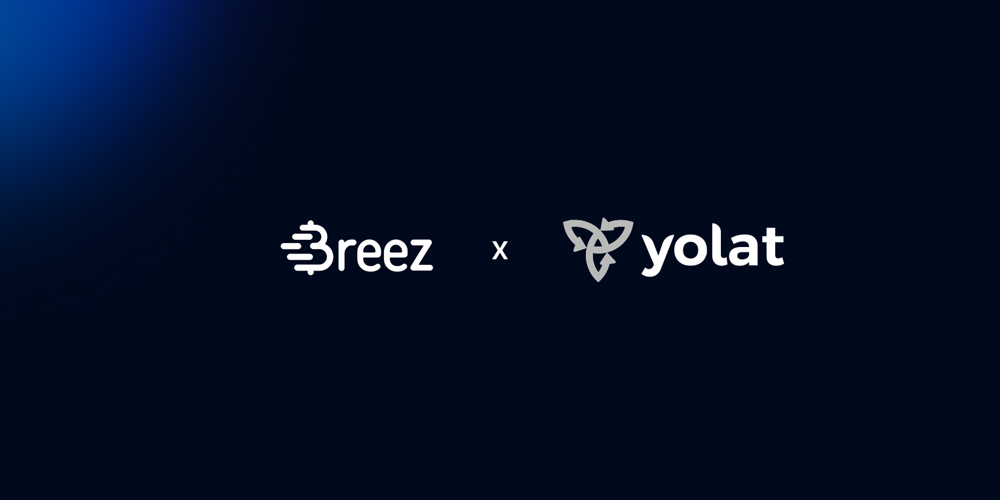

Yolat: Lightning-Fast Remittances


Yolat is a cross-border payments platform built for Africa. Users send naira from Nigeria and recipients receive rand in a South African bank account, cedis in Ghana, or shillings in Kenya. Sixteen currencies, one app.
Founded by Toyosi Abolarin, Yolat launched in October 2024. The Nigeria-to-South Africa rail, live since August 2025, has become one of the fastest-growing routes on the platform, with transaction volume increasing over 10x in its first five months.
But that rail almost didn't happen.
The Nigeria-to-South Africa route was the most requested rail on Yolat's roadmap. It was also the hardest to implement.
Sending money from Nigeria to South Africa through conventional channels means routing through a chain of (costly) intermediaries. Naira converts to dollars through an OTC desk. The dollars get wired to South Africa through a correspondent bank. Funds get paid out locally in rand. Each hop takes a cut. The whole chain can take up to four days.
For a platform where the average transaction is around 4,335 rand (roughly $250), the math verges on racketeering. Intermediaries' fees and exchange-rate markets can consume up to 20% of the transfer before the money even arrives.
The alternatives were hardly better. Stablecoins on Ethereum still carried settlement times of up to 30 minutes, with gas fees that could reach $15. OTC desks would require Yolat to front the rand, with spreads that shift daily. None of these options would have allowed Yolat to beat existing solutions, which was Toyosi's goal.
Yolat was watching users choose competitors who already offered the route, even at worse rates, simply because the route existed. This rail was in demand, but the infrastructure to serve it was in short supply.
Yolat integrated the Breez SDK as the rails behind their South African payouts, but not a wallet or a user-facing bitcoin product. Rather, they implemented the SDK as a server-side engine that sits between the sender and recipient, invisible to everyone except the engineering team that built it.
A user sends naira or USDT. Yolat converts and settles via Lightning. The recipient sees rand in their bank account within minutes. No one on either end sees or touches bitcoin. Value just moves.
For users:
- Speed: Funds arrive in minutes, not days, and the system runs around the clock, every day of the year.
- Economy: Transaction costs dropped from dollars per transfer to fractions of a cent. Yolat passes those savings on as better exchange rates, so more money lands in the recipient's account.
- Reach: Users holding stablecoins can convert directly to rand payouts without routing through a chain of fiat conversions. This path now accounts for roughly 20% of all South African transactions on the platform, a route that didn't exist six months ago.
"Breez lets you add Lightning without becoming a Lightning company. The SDK handles the hard infrastructure, so you can focus on building the product your users actually see."
Toyosi Abolarin, CEO — Yolat
For developers:
Integrating a typical payment provider could take Yolat's team up to six weeks. Using the Breez SDK, two engineers had the rails up and greased within three weeks, including fiat partners, treasury logic, and live testing with real money.
The ongoing overhead is now lower too. Yolat no longer needs to manage multiple bank relationships across Africa's six time zones, no longer cares about batch processing schedules, and wastes no more time negotiating banking fees.
Thanks to the Breez SDK, the settlement layer has become a transcontinental transporter beam: put money into one end, and it comes out the other end instantly, economically, magically.
For growth:
Since launching in August 2025, the South African rail has grown every month, with transaction volumes increasing over 10x in the last five months. The cost structure that the Breez SDK enables is one of the reasons: rails that would have been uneconomical with fiat or Ethereum are now viable, which means better rates, which means more users.
And Yolat is already expanding. Every new Africa-to-Africa rail can now run on the same infrastructure, with no new banking relationships or batch processing workflows required. The route that wasn't supposed to work has become the blueprint for every route that follows.
Ready to Get Started?
Join Yolat and 75+ apps adding instant, non-custodial bitcoin with the Breez SDK.